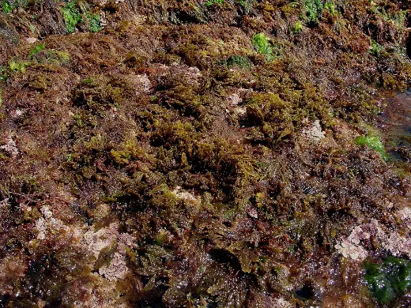

Wild green · All year
Pepper dulse
Osmundea pinnatifida
Also called Pepper dulse, Míobhán
Pepper dulse is a wild green you can forage all year round across Ireland. Small, frilly, dark purple to olive seaweed forming turf on rocks in the middle shore.

Caution. Cut with scissors and only from clean shores.
When is pepper dulse in season in Ireland?
Pepper dulse is usually in season all year round. Timing shifts with weather, latitude and altitude.
Where does pepper dulse grow in Ireland?
Pepper dulse grows across Ireland. Regions: Munster, Leinster, Connacht, Ulster (Republic).
How do you recognise pepper dulse?
Small, frilly, dark purple to olive seaweed forming turf on rocks in the middle shore.
How do you harvest pepper dulse?
Pinch off young tips and top leaves before the plant flowers, when they are tender and mild. Leave the roots and lower leaves so it regrows. Pick away from roads, sprayed verges and dog-walking paths.
How do you eat pepper dulse?
Dried and crumbled as a garlicky, peppery seasoning ('the truffle of the sea').
How do you store pepper dulse?
Dry.
What is pepper dulse good for?
Iron & calcium.
What can you cook with pepper dulse?
- Pepper dulse seasoning: Dried pepper dulse crumbled over eggs, fish and chips.